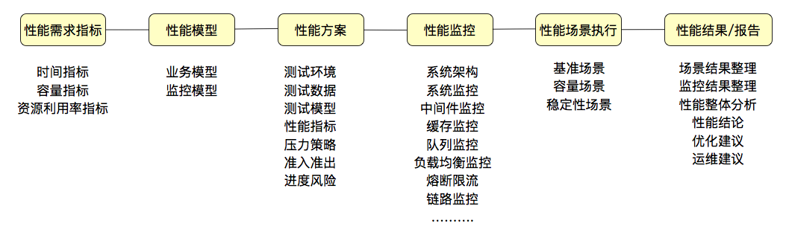

性能测试概念
概念
- 性能测试针对系统的性能指标，建立性能测试模型，制定性能测试方案，制定监控策略，在场景条件之下执行性能场景，分析判断性能瓶颈并调优，最终得出性能结果来评估系统的性能指标是否满足既定值。
性能测试指标
性能测试模型
- 业务模型
- 监控模型 有分层、分段的能力，要有全局监控、定向监控的能力
性能测试方案
- 测试环境、测试数据、测试模型、性能指标、压力策略、准入准出和进度风险
监控
- 要有分层、分段的能力，要有全局监控、定向监控的能力
性能测试预定条件
性能测试场景
- 在既定的环境（包括动态扩展等策略）、既定的数据（包括场景执行中的数据变化）、既定的执行策略、既定的监控之下，执行性能脚本，同时观察系统各层级的性能状态参数变化，并实时判断分析场景是否符合预期
基准性能场景
容量性能场景
稳定性能场景
- 稳定性测试必然是性能场景的一个分类，稳定性测试中，显然最核心的元素是时间，时间的设置应该来自于运维周期
异常性能场景
- 前提就是要有压力。在压力流量之下，模拟异常。这个异常的定义是很宽泛的
性能测试的性能调优
- 瓶颈判断、性能分析
- 新系统性能测试类
- 旧系统新版本性能测试类
- 新系统性能测试优化类
性能团队的职责
- 性能验证: 针对给定的指标，做性能验证
- 性能测试：针对给定的系统，做全面的性能测试，可以得到系统最大容量，但不涉及到调优
- 性能测试 + 分析调优: 针对给定的系统，做全面的性能测试，同时将系统调优到最优状态
性能测试报告
- 场景结果整理
- 监控结果整理
- 性能整体分析
- 性能结论
- 优化建议
- 运维建议
总结
- 数据驱动, 很多企业已转向修炼内功，开始注重内部效率的提升。而数据则是这项内功最核心的部分，向内寻找答案，通过数据的力量驱动增长。性能数据也一样。
- 
性能测试
- 性能测试通过概念、模型、观测、实验等手段来进行问题的剖析。其涉及范围之广，从压力工具操作系统、开发语言、数据库、消息队列、中间件、网络、压力工具等各个方面。通常还需要深入的理解各种原理，特别是在一些重点细节上，往往需要有超出一般的认识和方法。
分布式系统和单机系统在性能上的差别
- 分布式系统首先要做的就是响应时间消耗的监控拆分。定位到某节点后再定向分析
全链路压测
- 全链路压测是两个部分。全链路和压测測，压测部分要做的就是有清晰的标识，而全链路就是系统要做的链路改造。
- 从技术层面说，不管是使用同样的硬件做旁路应用，还是改造已有应用做链路标识识别，技术的实现手段都是成熟的。